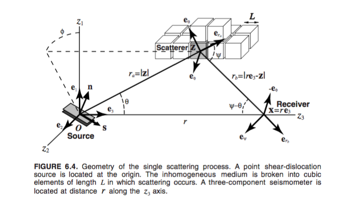
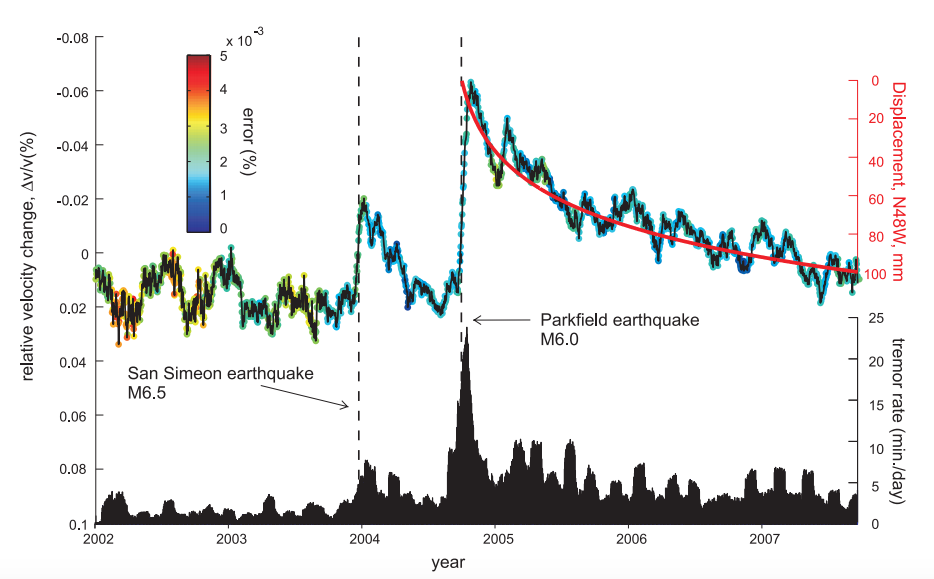
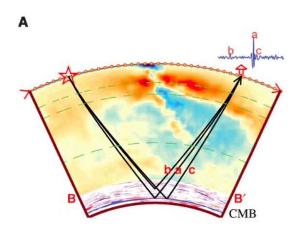

Seismic Wave Propagation
I have strong curiosity in studying the mechanism and physical process that governs the wave propagation, especially at structurally complex areas, imaging and inversion.(i.e. study on the coda wave and the wave propagation through the layer with strong lateral heterogeneity, attenuation, scattering and interaction with the free surface.)
View details »
The picture is from "Seismic wave propagation and scattering in the heterogeneous earth" H Sato, MC Fehler, T Maeda - 2012 - Springer

Ambient Noise Theory
Ambient seismic noise, which makes up the largest portion of seismic records, reflects the interactions among Earth’s spheres and provides valuable constraints on Earth’s shallow structure through cross-correlation.
Recently, Victor Tsai's and Fan-Chi Lin's groups are working on seismic interferometry, extracting new body-wave info from ambient noise field to image the deep area. I have great interests on following up their new tomography method to explore the deep earth.
View details »
The picture is from "Postseismic relaxation along the San Andreas fault at Parkfield from continuous seismological observations." Brenguier, Florent, et al.

Earth's Deep Interior(CMB)
The lowermost few hundred kilometers of the lower mantle are particularly anomalous in its seismological properties and are identified as the D″ region. The lower mantle appears to host complex thermochemical dynamic processes that likely have played a key role in mantle evolution throughout the history of planet Earth.
View details »
The picture is from "Seismostratigraphy and thermal structure of Earth's core-mantle boundary region." Van der Hilst, R. D., et al.
08/2017 – Present Ph.D., University of Cambridge
08/2013 – 06/2017 B.S., University of Science and Technology of China (USTC)
• Geophysics, School of Earth and Space Science
• School of the Gifted Young
08/2011 – 06/2013 Ma’anshan No.2 High School (Admitted to university a year in advance)
Topic: Analyzing Velocity Structure and Scattering in Homestake Area See my final report
Mentor: Prof. Victor C. Tsai
Topic: Analyzing Active Source Data in Homestake Mine
Mentor: Prof. Lee Liberty & Gabriel Gribler
Topic: Imaging the Earth's Core–Mantle Boundary with Seismic Migration
Mentor: Prof. Daoyuan Sun
Topic: Seismic Data Regularization
Mentor: Prof. Wei Zhang
03/2016 – 06/2016 Teaching Assistant in Electrodynamic Course
Lecturer: Xin Tao